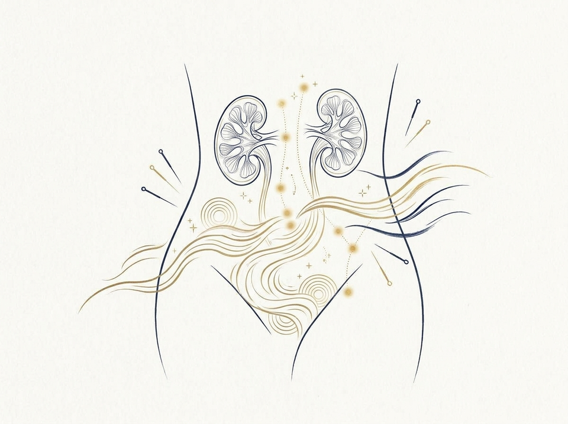

神経因性骨盤臓器症候群の鍼灸
画像に写らない骨盤内の痛みや排尿・排便の不調に対し、仙骨部ツボと自律神経調整で穏やかな改善をサポートします。

このようなお悩みはありませんか？
- ✓座るとつらいずんとした肛門の鈍痛がある
- ✓残便感や便・ガス漏れ、排尿しづらさがある
- ✓下腹部の張りや腹痛が繰り返し起きる
- ✓検査で異常がなく痔や前立腺炎と言われた
原因・メカニズム
骨盤内の第2〜4仙骨神経や骨盤内臓神経、陰部神経に沿って慢性的な痛みや排尿・排便障害が生じる症候群です。画像検査に異常が写りにくく、痔や慢性前立腺炎と誤認されやすい特徴があります。加齢による骨盤底・肛門機能の低下（中年以降の女性に多い）や、ストレス・自律神経の乱れ、偏食、手術後や糖尿病による末梢神経障害などが背景にあり、仙骨の左右に圧痛を伴うしこりが見られることも多いです。
当院の施術アプローチ
1. 器質的疾患の除外確認と仙骨部評価：まずは泌尿器科や肛門科等で痔・炎症・腫瘍などの器質的疾患がないか確認いただいた上で、仙骨左右の圧痛やしこり、自律神経の緊張状態を詳しく評価します。
2. 仙骨神経領域への的確なツボ施術：当院では自律神経の不調からくる骨盤内神経の問題に鍼灸が有効と考えており、膀胱兪・中膂兪・白環兪・胞肓・秩辺などの仙骨・殿部穴や、関元・天枢・腹結を組み合わせて深部緊張を緩めます。
3. 神経ブロック前の保存的ケアと生活指導：薬や一般的な保存療法で変化が出にくい方にも、強い処置を検討する前の選択肢として、骨盤底の力みを抜く呼吸法や冷え・ストレス対策をお伝えします。
よくある質問（FAQ）
Q. 病院の検査で異常なしと言われましたが、相談してもよいでしょうか？
はい、神経因性骨盤臓器症候群は画像に写りにくく原因不明とされやすい不調です。器質的な病気が除外されていれば、仙骨神経と自律神経に着目した鍼灸で丁寧にサポートいたします。
Q. 薬や骨盤底筋トレーニングで改善せず神経ブロックを勧められています。
医療機関の方針を尊重しつつ、保存療法で変化が出にくい場合の補完的な選択肢として、神経ブロックを行う前に一度ご相談いただくことも可能です。お体の状態に合わせて無理のない施術計画をご提案します。
#神経因性骨盤臓器症候群#骨盤痛#肛門痛#排尿障害#排便障害#仙骨神経